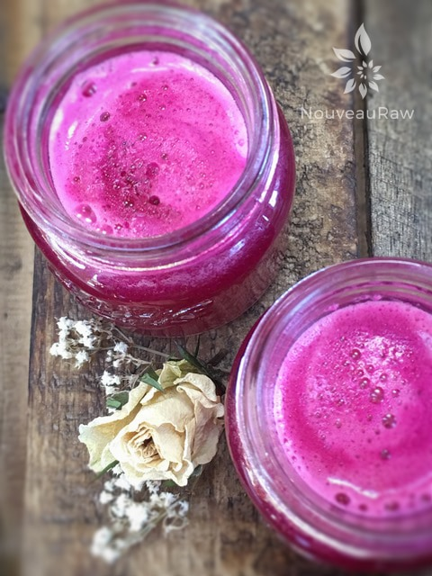

Sweet and Spicy Detox Juice
~ raw, vegan, gluten-free, nut-free ~
Sweet and Spicy Detox Juice is made from freshly harvested beetroots, ripe, crisp apples, and freshly sliced ginger root. It is uniquely sweet, earthy, with a kick of heat.
When juicing with beets choose firm, small, and smooth ones. Avoid beets that are either soft or shriveled. The smaller the beet, the sweeter it is. Beets are known to cause both stools and urine to turn red so if this happens, don’t be surprised.
Never drink beet juice by itself. Beet juice should always be mixed with other vegetables and/or apple juice. Pure beet juice (from the bulb or greens) can temporarily paralyze your vocal chords, make you break out in hives, increase your heart rate, cause chills or a fever.
Don’t forget your greens
Spinach is high in vitamin A and C and is one of only four vegetables that are also high in vitamin E, the others being chard, broccoli, and asparagus. It’s also an excellent source of choline, calcium, iron, potassium and folic acid.
It is surprisingly high in protein per calorie. Now, to add a little sweetness to the juice lets add in apples which are a good source of vitamin C, and high in pectin and other fibers. Lastly, a splash of ginger juice will warm the body, promoting healthy sweating, which not only assists detoxification but also boosts the immune system.
When consuming this drink, I recommend small shots at first, so you don’t end up with a cleansing reaction. This has happened to me in the past when I couldn’t control my, all or nothing, mentality. Juice tends to oxidize quickly. As this happens, the levels of nutrients begin to fall. This is why it is so important to drink juice as soon as possible after you make it. Some juicers work better than others at keeping oxidation at bay, allowing you to make enough juice to last a couple of days in the refrigerator. However, the sooner you drink it, the more nutritional value it has. I hope you enjoy this recipe. Blessings to you and your loved ones. amie sue
Yields 3-4 cups
- 2 organic apples
- 3 small red beets
- 4 cups organic spinach
- 1 1/2 inches fresh ginger
- liquid stevia to taste (if needed)
Preparation:
Juicer method:
- Wash and dry the produce.
- Remove the peeling from the beets, but feel free to leave the skins on the apples, but only if organic.
- Place the apples, beets, ginger, and spinach through your juicer.
- Ball up a handful of spinach before pushing it into your juicer’s feeder and follow with the apple or beet to push it through.
- Keep in mind you will need a juicer that can juice greens.
Blender method
- Place the apples, beets, ginger, and spinach in the blender craft and blend until smooth.
- Pour the mix into a nut bag and squeeze the juice out into a large bowl.
- Drink the juice and compost the pulp or save it to add to dehydrated crackers.
- Juice tends to oxidize quickly. As this happens, the levels of nutrients begin to fall. This is why it is so important to drink juice as soon as possible after you make it. Some juicers work better than others at keeping oxidation at bay, allowing you to make enough juice to last a couple of days in the refrigerator. However, the sooner you drink it, the more nutritional value it has.
- Serve over ice and add a little sweetener if needed.

© AmieSue.com